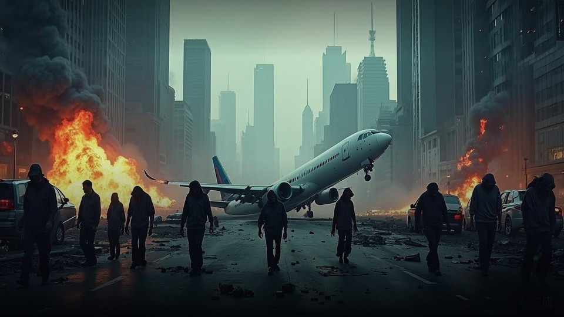

01 / READER正文
四十二章全本
六个版本全文一键切换：初稿、修订版、大改版、v2、v3 声音精修、番茄首发。
42CHAPTERS · 已收全
最近阅读：第 21 章 · 断桥

太阳还会升起，只是换了人间。废墟底下，也有人活着。
THE ARCHIVE AWAITS
太阳还会升起，只是换了人间。四十二章全文、世界观档案、爆款拆文与伏笔追踪，都收在这座档案馆里。
每一件展品都在陈列它自己的内容——不是入口，是内容本身。
六个版本全文一键切换：初稿、修订版、大改版、v2、v3 声音精修、番茄首发。
要塞据点、病毒节点、AI 人格、角色卡与卷纲。
番茄末世爆款精读，黄金三章与爽点拆解。
时间线、伏笔回收、角色状态一站式核对。
每日拆文回流、格式爆点与语言规范清单。
主角路线、军方防线、设定总览交互地图。